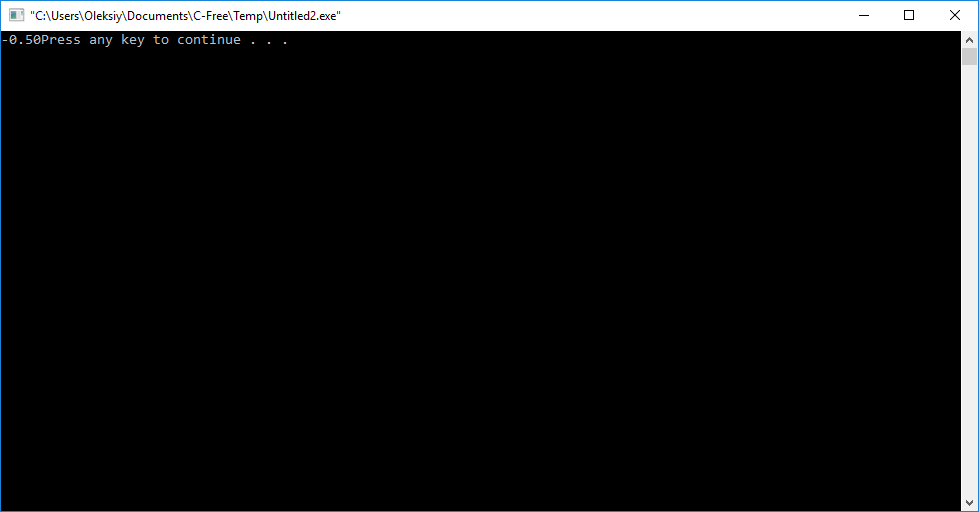

Лабораторна робота 4:
«Довідкова система інтегрованого середовища Visual C++ 2015. Розв'язування на С найпростіших задач із використанням умовних операторів та операторів циклу.»
Мета роботи:
- познайомитися iз довiдковою системою iнтегрованого середовища Visual C++ 2015;
- познайомитися iз умовними операторами та операторами циклу мови програмування С.
Опис засобiв довiдкової системи iнтегрованого середовища Visual C++ 2015:
Довідкову систему iнтегрованого середовища Visual C++ 2005 можна запустити через меню Help середовища. Iнша можливiсть системи допомоги Visual Studio 2005 Documentation задається з допомогою пiдсистеми Index. Ще одна можливiсть отримати довiдку полягає в наступному. У вiкнi Visual Studio 2005 у вiкнi з текстом програми встановлюємо курсор на елемент тексту програми довiдку з якого необхiдно отримати i натискаємо на клавiшу F1. В iнтегрованому середовищi Visual Studio 2005, точiше у вбудованому текстовому редакторi Visual Studio, є ще один цiкавий засобiв допомоги - контекстна пiдказка.
Індивідуальне завдання:
#include <stdio.h>
int main()
{
int n=5;
double y, m=-1.5;
y=m;
for(n=0; n<5;n++)
{
m+=0.5;
if(m<0)
{
if(y<m)
y=m;
}
}
printf("%5.2f",y);
return 0;
}

Висновок:
на лабораторній роботі ми познайомилися із довідковою системою iнтегрованого середовища Visual C++ 2015, а також, познайомилися iз умовними операторами та операторами циклу мови програмування С.